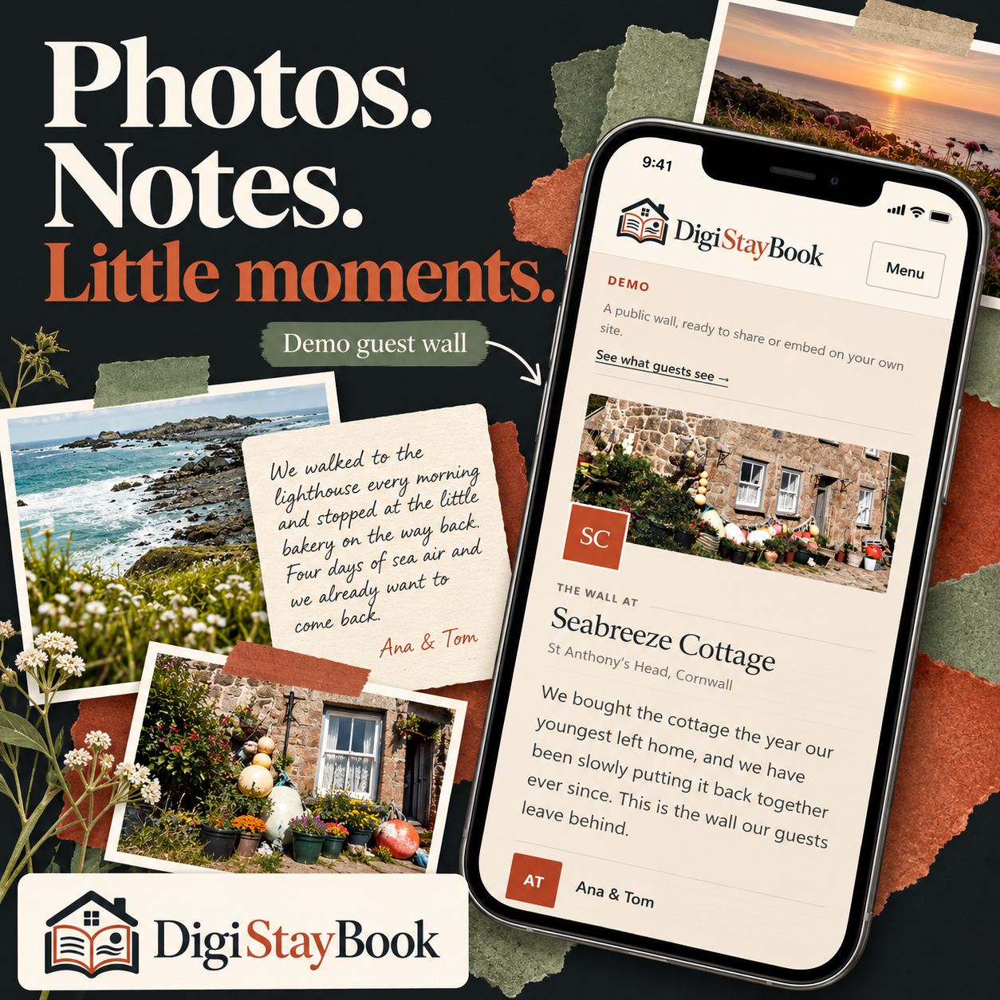
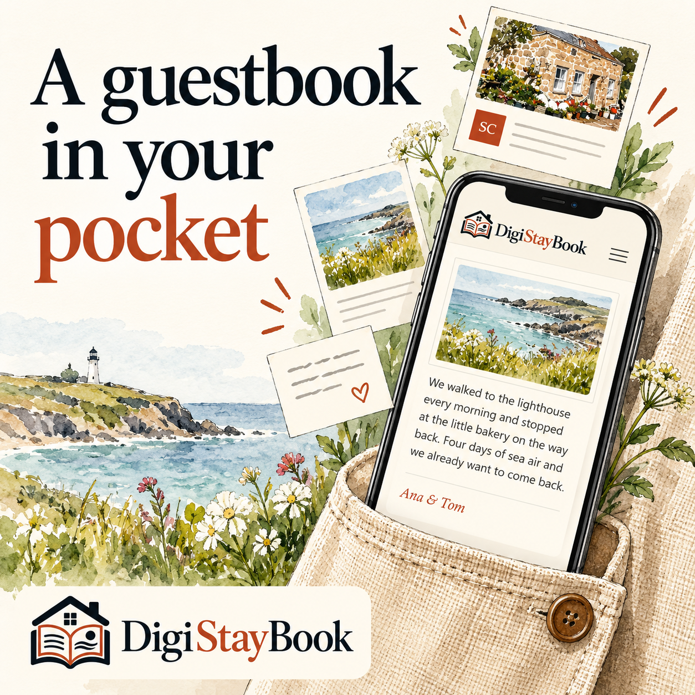
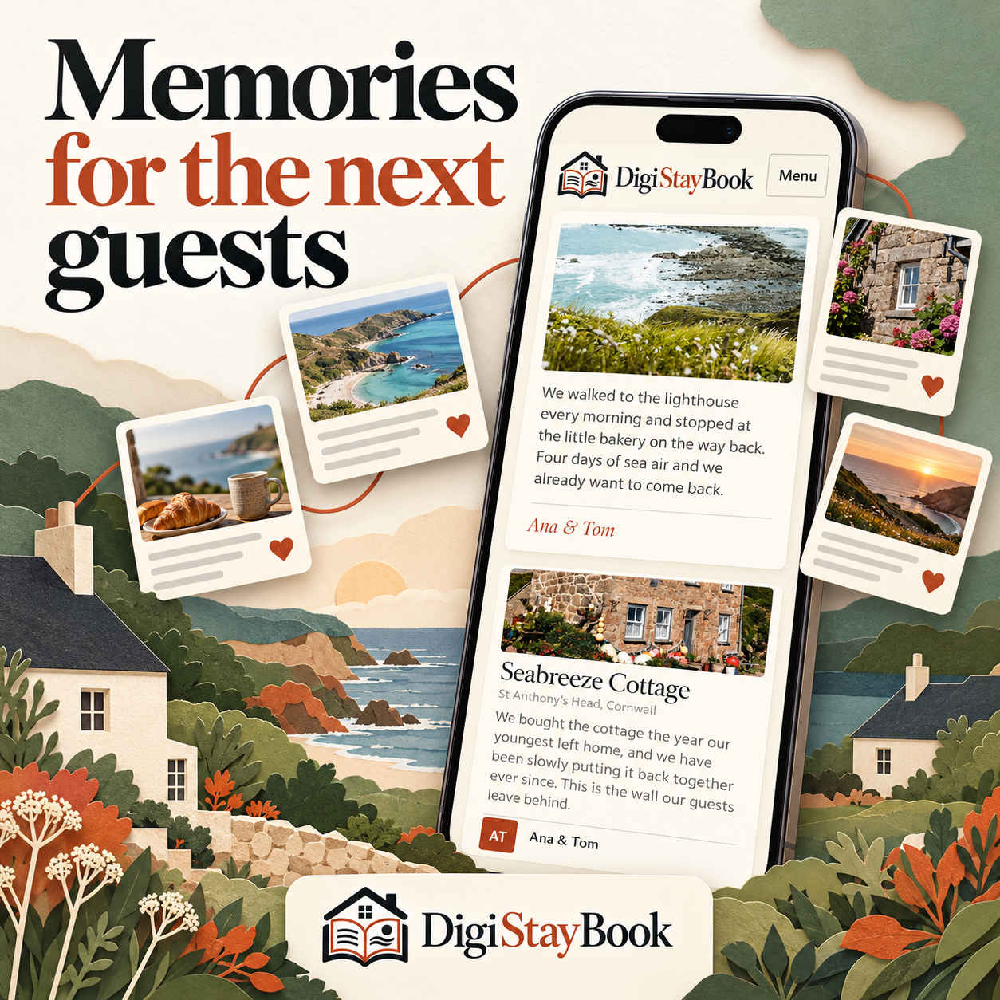
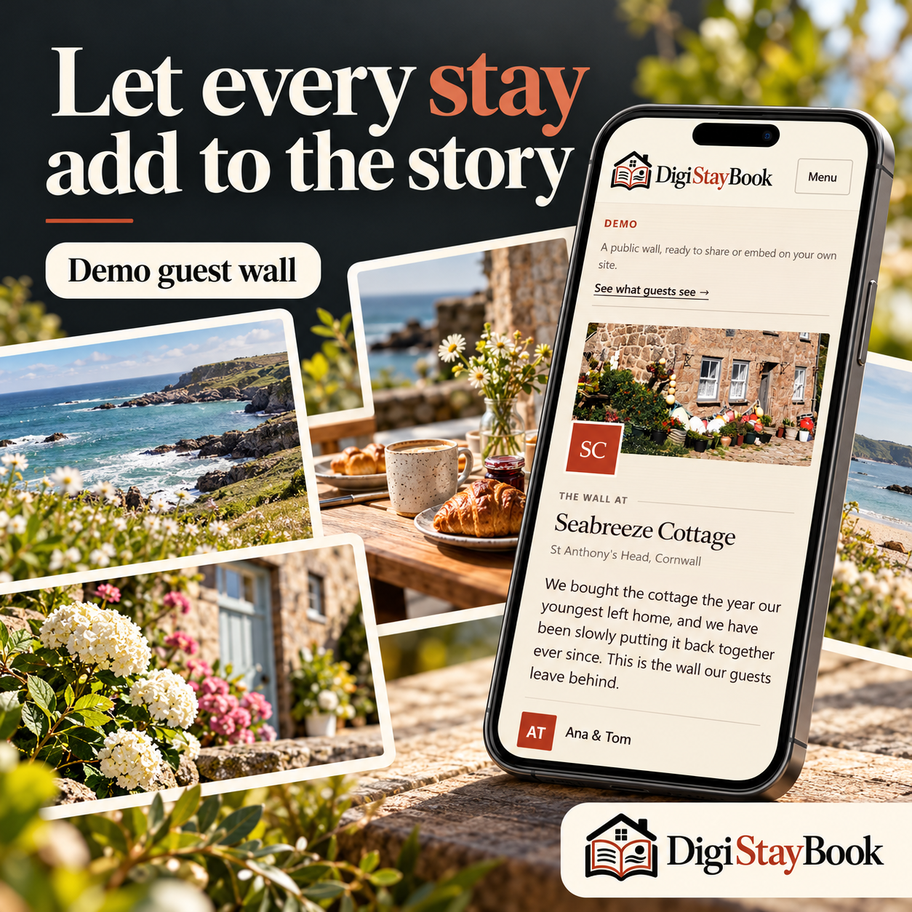
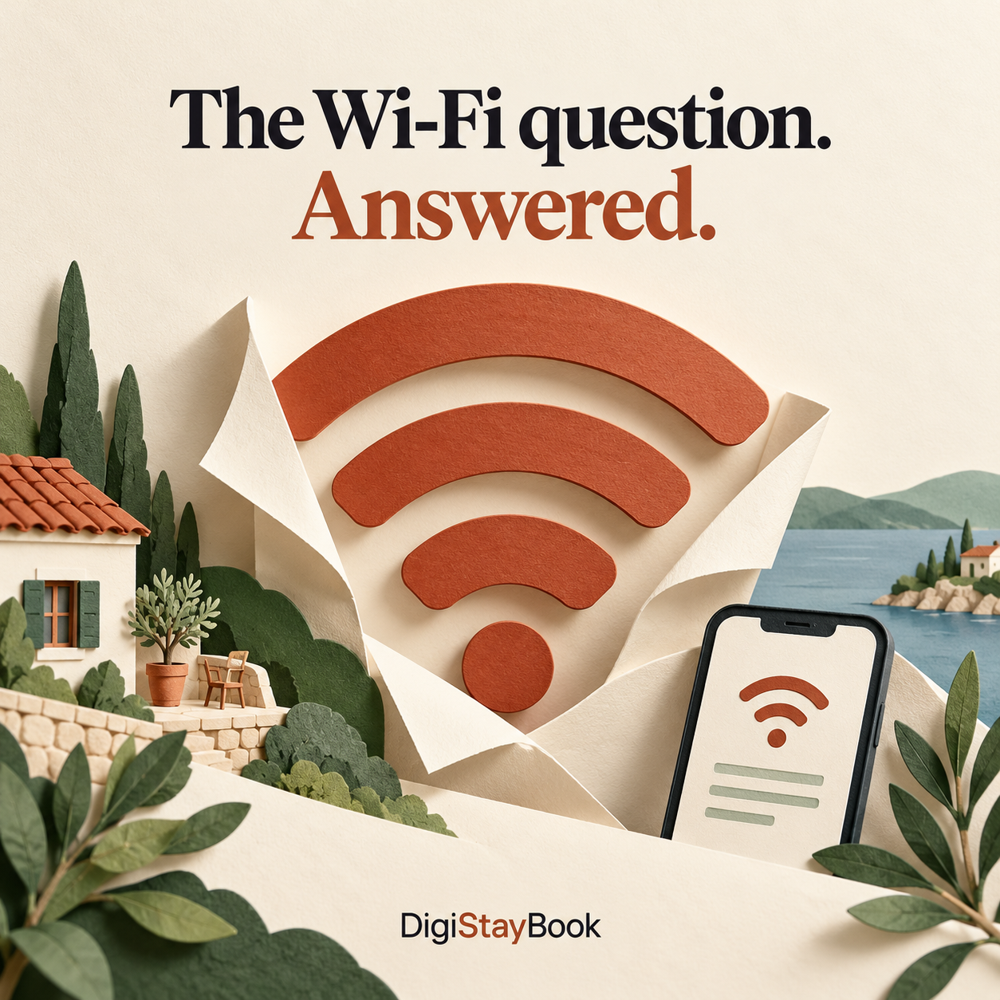
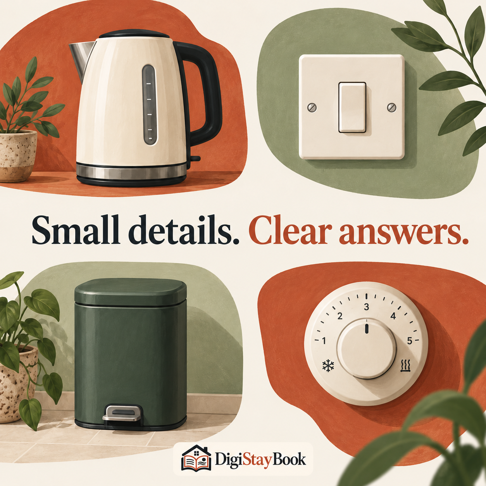
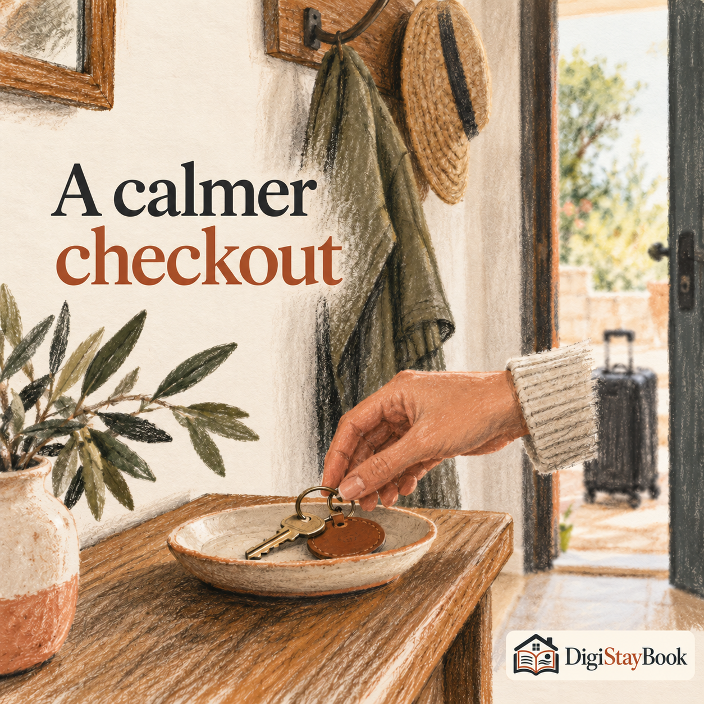
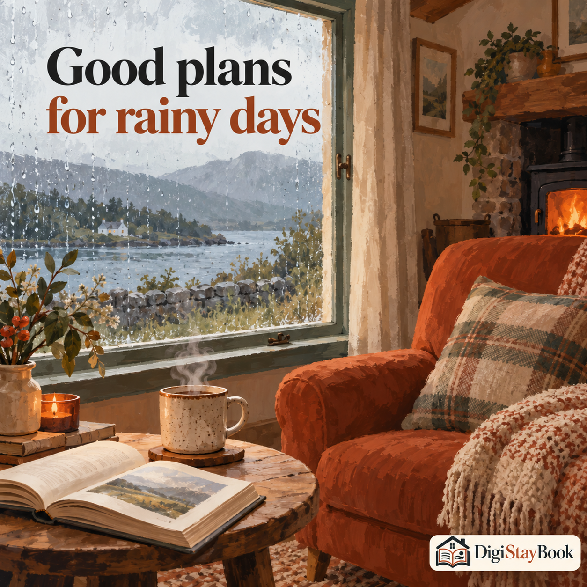
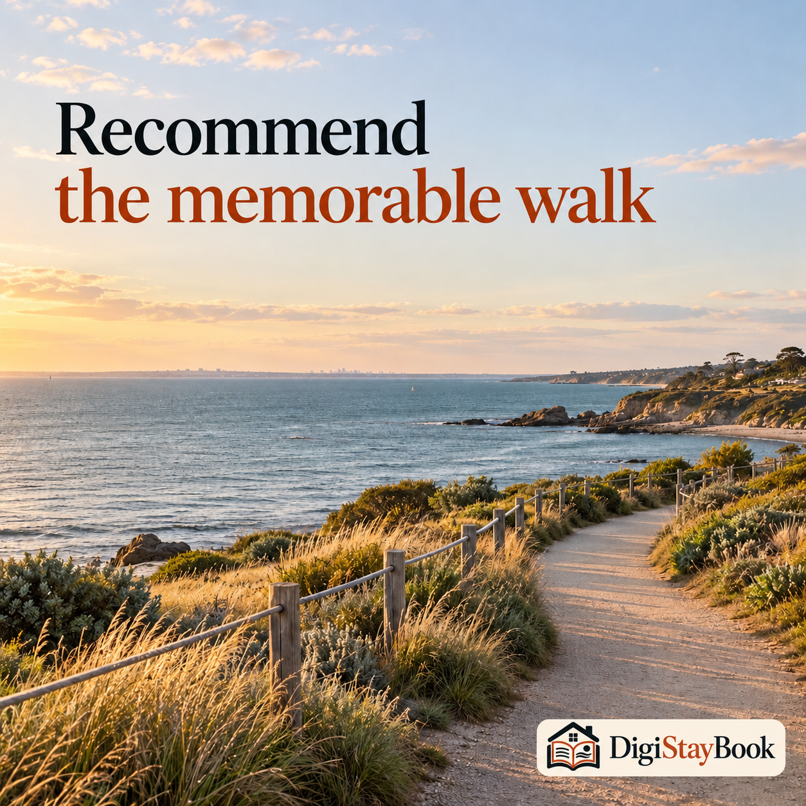
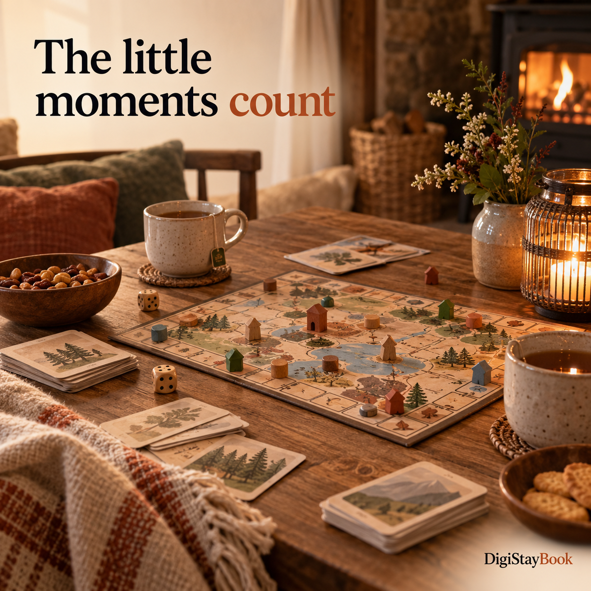

POST 01A digital guestbook for your rentalGive each stay a place in your property's story. With DigiStayBook, guests can leave photos and messages from their phone. Explore the digital guestbook at digistaybook.com.Download image
POST 02Leave a little memoryA favourite photo. A few words about the weekend. A little thank-you for the host. Invite guests to leave a memory in your digital guestbook before they head home. digistaybook.comDownload image
POST 03Photos. Notes. Little moments.The best part of a stay is often a small moment. Bring guest photos and messages together on one digital guest wall with DigiStayBook. digistaybook.comDownload image
POST 04A guestbook in your pocketGuests don't need to find a pen or remember to sign a book. They can open your digital guestbook on their phone and add a little piece of their stay. digistaybook.comDownload image
POST 05Your guests. Their stories.Your property is the setting. Your guests bring the stories. Make room for their photos, messages and memories with a DigiStayBook digital guestbook. digistaybook.comDownload image
POST 06Memories for the next guestsOne stay ends. Another begins. A digital guestbook lets the next guests discover the memories left by the people who stayed before them. digistaybook.comDownload image
POST 07No app. Just a memory.Your guests can open DigiStayBook in their phone browser. No app to download and no guest account to create. Just a simple way to leave photos and a message. digistaybook.comDownload image
POST 08Let every stay add to the storyOver time, little contributions become a story of your place: photos, kind notes and favourite moments from different stays. Start your digital guestbook at digistaybook.com.Download image
POST 09A thoughtful welcomeA warm welcome starts the stay. A digital guestbook helps remember it. Give guests a place to share the photos and little moments they'll take home. digistaybook.comDownload image
POST 10Share your local favouritesEvery guest discovers something different. A favourite laneway, a coffee stop or a quiet corner can become part of the story they leave in your digital guestbook. digistaybook.comDownload image
POST 11The Wi-Fi question. Answered.Useful house information and guest memories can share one home. DigiStayBook brings your digital guestbook together with handy guidance for the stay. digistaybook.comDownload image
POST 12Make arrival feel easyHelp guests settle in, then invite them to make memories. DigiStayBook gives your rental a digital guestbook for the photos and messages that come after the welcome. digistaybook.comDownload image
POST 13A good morning starts locallySometimes the photo worth keeping is simply breakfast in the morning light. Give guests a digital guestbook where those everyday holiday moments can live. digistaybook.comDownload image
POST 14Leave room to settle inThe first night away. A peaceful room. A weekend to slow down. Your digital guestbook is a place for guests to remember how the stay felt. digistaybook.comDownload image
POST 15Small details. Clear answers.A digital guestbook should be easy to enjoy. Guests can browse the wall and leave photos or messages from their phone, without downloading an app. digistaybook.comDownload image
POST 16A calmer checkoutBefore the keys go back, invite guests to leave a photo or a few words in your digital guestbook. A small goodbye can become part of your property's story. digistaybook.comDownload image
POST 17Good plans for rainy daysRain on the windows. A cosy afternoon inside. Holiday memories don't need perfect weather. Make room for all the little moments in your digital guestbook. digistaybook.comDownload image
POST 18A little local knowledgeA tram ride, a new neighbourhood, a day exploring Melbourne. Invite guests to share a favourite moment from their visit on your digital guest wall. digistaybook.comDownload image
POST 19Recommend the memorable walkA bayside walk can be the highlight of a stay. With a digital guestbook, guests have somewhere to share the view and a little note about their visit. digistaybook.comDownload image
POST 20The little moments countSome of the best holiday memories happen around a table. Give guests somewhere to leave the photo, the story and the happy little moments of their stay. digistaybook.comDownload image